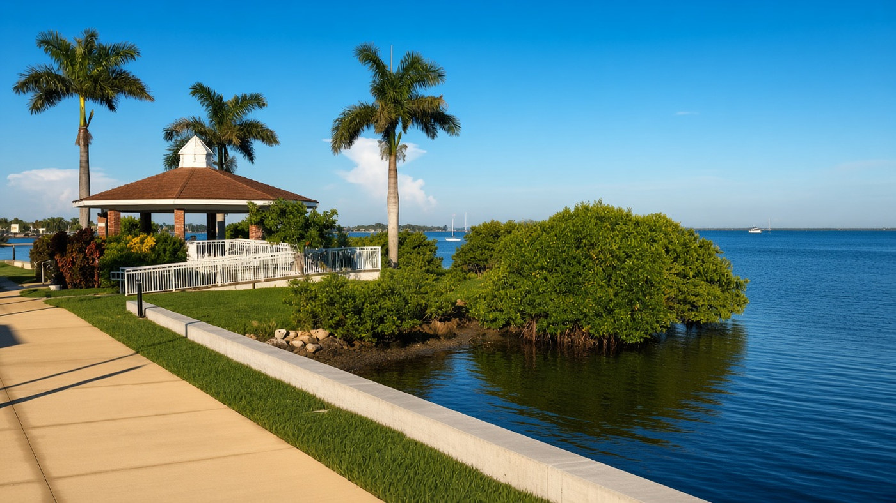
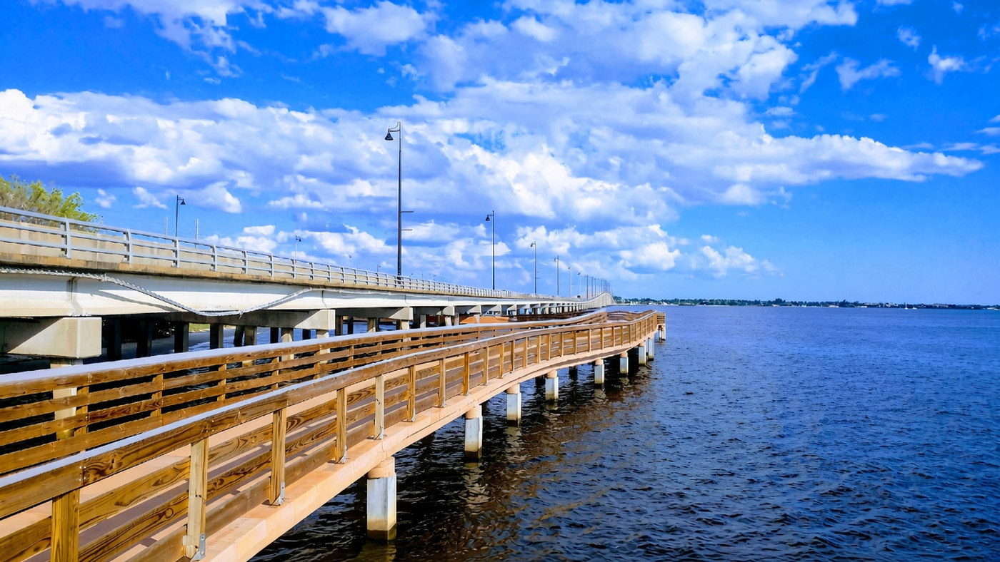
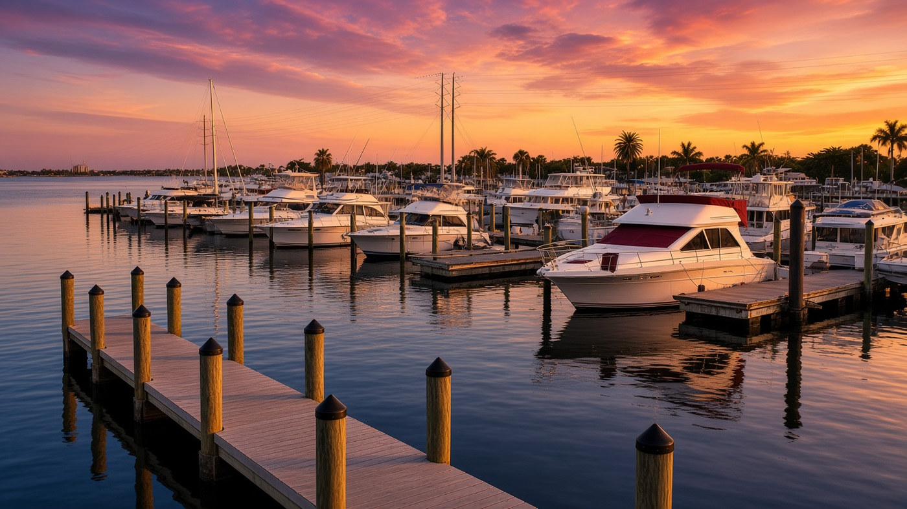

Draft preview for review. Not published. Refresh draft of the live post, with a direct answer at the top and 5 new FAQs. Not approved yet. Images shown from local copies. Rollout batch
Is Punta Gorda a Good Place to Live? (refresh draft)

Punta Gorda & Charlotte County, FL
Is Punta Gorda a good place to live? Yes, if you want a small, walkable harbor city on Florida's Gulf Coast with easy water access, mild winters, and its own airport, and you can plan for hot, wet summers, hurricane risk, and higher insurance costs.
I am not going to sell you on it. Punta Gorda is the county seat of Charlotte County and its only incorporated city, a small harbor town of about 20,000 people at the mouth of the Peace River on Florida's Gulf Coast. Most of what people love about it is tied to water. Most of what buyers worry about is tied to the same water.
The city's median owner-reported home value is $518,100, above the county's $328,900, and the median age is 66.3 (U.S. Census Bureau, ACS 2020-2024). Here is the scorecard, with sources, and the questions that decide the answer for you.
Quick Answer
Yes, for buyers who want a harbor town and will plan for storms.
Punta Gorda is a strong fit if you value water access, a walkable downtown, and a small-town setting. It is a weaker fit if you want dry heat, real seasons, or a low insurance bill. Budget for insurance, flood zones, and storm preparation before you pick a house.
Jump to
Part 01
The honest verdict
Who loves it here, and who should think twice.
Punta Gorda fits buyers who want a small harbor city with water access and can budget for storms and insurance. The Harborwalk runs 2.5 miles along the water, and Punta Gorda Isles has about 45 miles of canals. Summers are hot and wet, and the city's median owner-reported home value is $518,100.
Gilchrist Park on the Harborwalk, looking out over Charlotte Harbor.
The upside
You will probably love it if
You want a walkable harbor downtown. The Harborwalk is a 2.5-mile waterfront path that connects Laishley Park, Gilchrist Park, and Fishermen's Village.
Water access is the point. The city's canal neighborhoods, including Punta Gorda Isles and Burnt Store Isles, have about 45 and 9 miles of canals.
You fly often. Punta Gorda Airport served a record 2,282,002 passengers in 2025.
You like public art and community events. The Punta Gorda Historic Mural Society has created 31 murals around town.
The tradeoffs
Think twice if
Hurricane exposure worries you. Charley (2004) and Ian (2022) both made landfall in the area.
You are used to dry heat or real seasons. About 33 of the 52.97 annual inches of rain fall from June through September.
You want a bargain price. The city's median owner-reported home value is $518,100, against $328,900 for the county.
You do not want to budget for insurance, flood zones, and seawall or dock upkeep.
Source: City of Punta Gorda, Harborwalk; Punta Gorda Airport, 2025 passenger traffic; U.S. Census Bureau ACS 2020-2024, Punta Gorda city.
This guide does not tell you whether to move. It gives you the public facts we trust and the questions that decide the answer. For the full market picture, see our Punta Gorda real estate guide.
Part 02
Punta Gorda by the numbers
Citywide figures are context only. They are not a substitute for visiting, or for recent comparable sales on a specific house.
Punta Gorda has 20,278 residents in ACS 2020-2024 data, a median age of 66.3, and a median owner-reported home value of $518,100, above the county's $328,900. About 81.7 percent of occupied homes are owner-occupied, and 19.8 percent of units are seasonal. These are citywide estimates, not a sale price for one house.
20,278
residents, ACS 2020-2024
66.3
median age. 53.6% of residents are 65 or older. The county is 59.9
$518,100
median owner-reported home value. County $328,900, Port Charlotte $269,900
$85,779
median household income, 2024 dollars, margin of error about $9,900
81.7%
of occupied homes are owner-occupied
$1,410
median gross rent, with a wide margin of error of about $323. The county is $1,464
19.8%
of housing units are seasonal. The county is 15.7%
2.28M
airport passengers in 2025, up 18.5% from 2024
Source: U.S. Census Bureau ACS 2020-2024, Punta Gorda city; ACS, Charlotte County; ACS, Port Charlotte CDP; Punta Gorda Airport, 2025 passenger traffic.
Owner-reported values are what owners estimated their homes were worth, not a median sale price. Punta Gorda Airport's Allegiant is the primary carrier, with nonstop service to more than 50 destinations.

The fishing boardwalk and the Peace River bridge on the Punta Gorda waterfront.
Part 03
The climate, honestly
Winters are mild. Summers are hot and wet.
NOAA's 1991-2020 normals for Punta Gorda show a January average high of 75.3 degrees and a July high of 92.5 degrees. The city gets 52.97 inches of rain a year, with about 33.3 inches falling from June through September. Visit in August if you are used to dry heat or real seasons.
75.3°
January average high, NOAA 1991-2020 normals
92.5°
July average high
85.4°
annual average high
Where the 52.97 inches of annual rain falls
Roughly 63 percent of the annual total.
The annual total minus June through September.
Source: NOAA National Weather Service, Punta Gorda normals (1991-2020).
If you are used to dry heat or to seasons, visit in August before you decide. The city also has a seasonal pattern, with about one in five housing units used seasonally.
Part 04
The tradeoff to price in: hurricanes, flood zones, and insurance
Punta Gorda has been directly hit by major hurricanes.
Hurricane Charley came ashore as a Category 4 hurricane on August 13, 2004, and Hurricane Ian made a second landfall near Punta Gorda on September 28, 2022. Get an insurance quote and a flood-zone check before you commit to a house. FEMA's Risk Rating 2.0 can price two houses a block apart very differently.
Aug 13, 2004
Hurricane Charley came ashore as a Category 4 hurricane near Cayo Costa, and its eyewall then passed over the Punta Gorda area.
Sep 28, 2022
Hurricane Ian made landfall on Cayo Costa, then made a second landfall near Punta Gorda, according to the National Hurricane Center's final reports.
Source: NHC, Hurricane Charley report; NHC, Hurricane Ian report.
Those facts do not tell you what a particular house will cost to insure. They do mean you should plan for storms. In practice that means getting an insurance quote and a flood-zone check before you fall in love with a house, asking for roof age and wind-mitigation documents, and learning where you would go if an evacuation order came. FEMA's Risk Rating 2.0 prices flood insurance using factors such as distance to flooding sources, ground elevation, first-floor height, and foundation type, so two houses a block apart can have very different premiums. Costs change, so this guide will not invent one.
Source: FEMA, Risk Rating 2.0.
The housing market, in context
The ACS median owner-reported value for the city is $518,100, with a margin of error of about $41,000. These are survey estimates covering every housing type, so they say nothing about a particular canal home or condominium. The FHFA house-price index for the Punta Gorda metro area, which covers Charlotte County, was 391.34 in the second quarter of 2026, down 0.2 percent from a year earlier and 7.7 percent below the second quarter of 2024. It is a repeat-transaction index for the whole metro area, not a Punta Gorda sale price. Florida's homestead exemption can matter if the house will be your permanent residence: for 2026 it is up to $50,000 of assessed value, with the first $25,000 applying to all property taxes, and the Save Our Homes cap is 2.7 percent for 2026. Amendment 3, approved by Florida voters on November 3, 2026, raises the homestead exemption from non-school taxes to up to $150,000 of assessed value in 2027 and up to $250,000 in 2028, adjusted for inflation after that, starting with the 2027 tax roll. If you are not a Florida resident as of December 31, 2026, you start at a $25,000 exemption for school taxes and up to $50,000 for non-school taxes, and the larger exemption begins in your fifth year of exemption. You must own and live in the home on January 1 and apply by March 1. If you are not sure you should buy at all, read our post on whether to rent or buy a home.
Source: FHFA House Price Index; Florida Department of Revenue, homestead; Florida Department of Revenue, Save Our Homes.

Laishley Park Marina at sunset on the Punta Gorda waterfront.
Part 05
Which Punta Gorda? Picking a part of town
Living in Punta Gorda can mean very different lives.
Living in Punta Gorda can mean the walkable Historic District, a canal lot in Punta Gorda Isles or Burnt Store Isles, a marina community at Burnt Store Marina, or a quieter inland setting such as Deep Creek. Canal neighborhoods have about 45 and 9 miles of canals, and the city maintains the seawalls through assessment districts.
Walkable
The Historic District
Close to the harbor, the Harborwalk, shops, and restaurants. See the Historic District page.
First check
Building age, parking, and flood zone.
Boating
The canal neighborhoods
A dock and a boat. Punta Gorda Isles and Burnt Store Isles have about 45 and 9 miles of canals, and the city maintains the seawalls through assessment districts.
First check
Seawall age and the canal assessment.
Marina
Burnt Store Marina
A marina community just across the Lee County line. See our Burnt Store Marina guide.
First check
The slip, as a separate purchase.
Quiet
Inland: Deep Creek and Burnt Store Meadows
Inland settings, away from the water. See Deep Creek and Burnt Store Meadows.
First check
Flood zone and distance to the water you actually want.
If a condominium is on your list, see our condo guide. If you are weighing the neighboring market, Port Charlotte real estate has a much lower median owner-reported value in the census data and a different feel. The neighborhoods page maps the rest, and current homes are on our properties page.

The brick-paved corner of Sullivan Street in the Punta Gorda Historic District.
Part 06
Moving to Punta Gorda: questions, answered
Is Punta Gorda a good place to live?
Yes, for people who want a small harbor city with water access and are prepared for hurricane risk, insurance costs, and hot, wet summers. The right part of town depends on whether you want walkability, a canal and dock, a marina, or a quieter inland setting.
What is the population of Punta Gorda?
The Census Bureau's ACS 2020-2024 estimate for the city is 20,278 people. Punta Gorda is the only incorporated city in Charlotte County, and the county has about 201,000 people.
How hot does Punta Gorda get?
NOAA's 1991-2020 normals for Punta Gorda show an average high of 92.5 degrees in July and August and 75.3 degrees in January. The city gets about 53 inches of rain a year, with about 33 inches falling from June through September.
Has Punta Gorda been hit by hurricanes?
Yes. Hurricane Charley made landfall in the area on August 13, 2004, as a Category 4 hurricane, and Hurricane Ian made a second landfall near Punta Gorda on September 28, 2022, according to the National Hurricane Center. Plan for insurance, flood zones, and evacuation before you buy.
Is Punta Gorda expensive?
The city's ACS 2020-2024 median owner-reported home value of $518,100 is higher than Charlotte County's $328,900 and Port Charlotte's $269,900. Prices vary by water access and neighborhood, so ask for recent comparable sales for the specific area.
Can I fly in and out of Punta Gorda?
Yes. Punta Gorda Airport served a record 2,282,002 passengers in 2025. Allegiant is the primary carrier, with nonstop service to more than 50 destinations.
Do most Punta Gorda homeowners live here year-round?
Many do, but a meaningful share are seasonal. In ACS 2020-2024 data, 19.8 percent of housing units in the city are held for seasonal, recreational, or occasional use, compared with 15.7 percent for the county.
What are the pros and cons of living in Punta Gorda?
Pros: a 2.5-mile waterfront Harborwalk, about 45 miles of canals in Punta Gorda Isles, a January average high of 75.3 degrees, and nonstop flights from Punta Gorda Airport. Cons: July highs average 92.5 degrees, about 33 of the 53 annual inches of rain fall from June through September, the area was hit by Hurricanes Charley (2004) and Ian (2022), and home values run above the county median.
Is Punta Gorda a good place to retire?
Many retirees think so. The city's median age is 66.3, and 53.6 percent of residents are 65 or older, according to the Census Bureau's ACS 2020-2024 estimates. If the home will be your permanent residence, Florida's homestead exemption and the Save Our Homes cap can lower and steady your property taxes.
Where is Punta Gorda, Florida?
Punta Gorda is on Florida's Gulf Coast at the mouth of the Peace River, where it meets Charlotte Harbor. It is the county seat of Charlotte County and the county's only incorporated city.
Does Punta Gorda flood?
Some parts do, and risk varies block by block. Flood risk depends on the flood zone, ground elevation, and first-floor height, which is why FEMA's Risk Rating 2.0 can price two nearby homes very differently. Check the FEMA flood zone and get an insurance quote for the specific home before you commit.
What is the best neighborhood in Punta Gorda?
It depends on how you want to live. The Historic District is the most walkable, Punta Gorda Isles and Burnt Store Isles are built for boaters, Burnt Store Marina centers on a marina, and Deep Creek is a quieter inland option. Our neighborhoods page compares them.
Related Reading
Also: A guide to condos in Punta Gorda · A Local Guide to Punta Gorda Real Estate
Thinking about moving here?
If you are thinking about moving to Punta Gorda, talk with a team that lives and works in this market and can show you the different parts of town in person. Call or text The Helgemo Team at (941) 770-2275.
The office is at 320 Cross Street, Punta Gorda, Florida 33950. You can also meet Brian Helgemo or read more about the team.
Sources: U.S. Census Bureau, American Community Survey 2020-2024 estimates for Punta Gorda city, via Census Reporter; U.S. Census Bureau, American Community Survey 2020-2024 estimates for Charlotte County, via Census Reporter; U.S. Census Bureau, American Community Survey 2020-2024 estimates for Port Charlotte CDP, via Census Reporter; NOAA National Weather Service Tampa Bay, Punta Gorda monthly and annual normals (1991-2020); National Hurricane Center, Tropical Cyclone Report: Hurricane Charley; National Hurricane Center, Tropical Cyclone Report: Hurricane Ian; FEMA, NFIP Risk Rating 2.0 pricing approach; Punta Gorda Airport, 2025 passenger traffic; City of Punta Gorda, Harborwalk; Punta Gorda Chamber of Commerce, things to do; City of Punta Gorda, Canals; Florida Department of Revenue, Property Tax Information for Homestead Exemption; Florida Department of Revenue, Amendment 3 bulletin PTO 26-21 (November 5, 2026); Florida Department of Revenue, Save Our Homes; Federal Housing Finance Agency all-transactions House Price Index, Punta Gorda, FL metropolitan area, Q2 2026. Citywide, metro, and county figures are context only. Whether Punta Gorda is right for you depends on your own plans, budget, and tolerance for storm risk. Sources reviewed November 10, 2026.